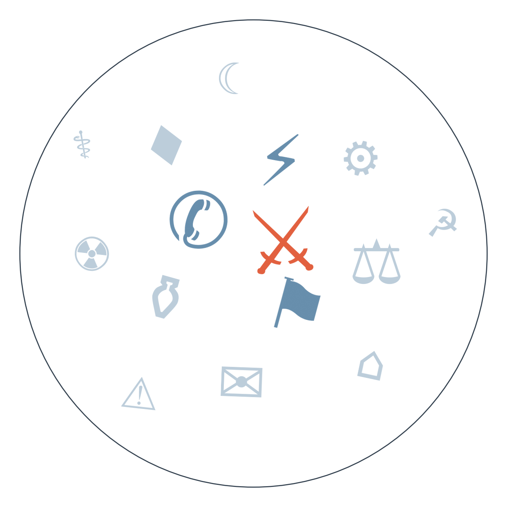

Ранковий бріф · огляд світової преси
Отже, хусити завершили те, що почали ще влітку: узбережжя Ємену повністю під їхнім контролем, острів Перім взято, а Баб-ель-Мандебська протока — ключовий прохід до Суецу — тепер фактично в одних руках. Одночасно дрони, запущені, за версією Ер-Ріяда, з території Іраку, вивели з ладу нафтопровід Схід-Захід Саудівської Аравії. Виходить, що обидва вузли світового нафтотранзиту — Ормуз і тепер Баб-ель-Мандеб — майже одночасно опинилися під тиском однієї й тієї ж мережі проіранських сил, штовхаючи нафту до нових максимумів напередодні рішення ФРС (ескалація навколо Ормузу та Ємену, триває з серпня).
У Делі тим часом відкрився саміт БРІКС за участю Путіна і Сі, і росіянин одразу заявив: розміщення європейських військ в Україні означатиме війну Європи з Росією. Індія намагається втримати БРІКС від перетворення на антизахідну платформу, а Захід і так не чекав від саміту спільної позиції — лише демонстрації, наскільки міцно тримаються Москва і Пекін (дипломатичні спроби завершення війни в Україні, тривають з вересня).
Раунд переговорів Ізраїлю й Лівану в Римі перенесли з вересня на жовтень, тоді як Ізраїль повідомив про знищення підземної інфраструктури "Хезболли" під хребтом Алі-ат-Тахер і заявив про готовність до нових ударів. Затримка діалогу на тлі демонстративних воєнних успіхів показує, що Ізраїль веде перемовини з позиції сили, не поспішаючи закріплювати статус-кво дипломатично.

Хто відповідальний за атаку на саудівський нафтопровід і чи пов'язана вона з наступом хуситів
Замовчують: жодне з джерел не пише прямо, чи причетні до атаки хусити, "Хезболла" чи проіранські угруповання в самому Іраку — Багдад засудив напад і звільнив командира прикордонного округу, але виконавця слідство не назвало.
Чому розходяться: французький і арабський мейнстрім спрощують хроніку до звичного наративу "ескалація Ірану", бо так зручніше вписати подію у вже знайому рамку війни; ділові видання (FT, OilPrice) зацікавлені в точності джерела загрози, бо від цього залежать рішення трейдерів; іранська державна агенція обирає обережне формулювання, щоб не визнавати причетність союзників Тегерану.
Що означає 25-та річниця 11 вересня для сьогоднішньої політики
Замовчують: жодне з чотирьох джерел не згадує в контексті річниці, що США сьогодні є союзником Саудівської Аравії у війні проти Ємену й Ірану — попри давні претензії саме до неї щодо 11 вересня.
Чому розходяться: американські видання використовують річницю інструментально — Трамп для виправдання поточної війни, вдова для тиску на Саудівську Аравію; європейське видання дистанціюється від американської внутрішньої політики і піднімає загальніше питання про світовий порядок; чеське розслідувальне видання цінує архівний матеріал сам по собі.
кінець серпня хусити відновлюють бойові дії проти уряду Ємену за підтримки Ірану → початок вересня видобуток нафти Саудівської Аравії падає через відновлення війни → 11 вересня хусити захоплюють порт Моха й острів Перім, встановлюючи контроль над Баб-ель-Мандебом → 12 вересня дрони з території Іраку виводять з ладу нафтопровід Схід-Захід → веде до: зростання цін на паливо в США і зростаючої ймовірності активації Мекканського оборонного альянсу Пакистану й Саудівської Аравії.
5 вересня розгортається масштабна антикорупційна операція НАБУ і САП → 8 вересня у відставку йде генеральний прокурор Кравченко, перевищивши початкові очікування слідства → очікується 22 вересня має бути призначений його наступник → веде до: тесту на те, чи стане новий генпрокурор незалежною фігурою, чи людиною, тісно пов'язаною з Офісом президента, що визначить довіру західних партнерів до антикорупційної інфраструктури.
кінець серпня Мерц стикається з публічними закликами переглянути лідерство в ХДС через ослаблення бар'єру проти АфД → 7 вересня партія БСВ у Саксонії-Ангальт заявляє про готовність до перемовин з АфД у разі її перемоги → 11 вересня АфД подає позов проти самого Мерца, звинувачуючи його в "етнічній чистці" кваліфікованих кадрів → 12 вересня у Мекленбурзі-Передній Померанії ХДС побоюється не подолати п'ятивідсотковий бар'єр на найближчих виборах, показуючи, що ослаблення поширюється й на інші землі → веде до: рішення про формування коаліції в землі 20 вересня, яке покаже, чи витримає ізоляція АфД перший реальний тест на регіональному рівні.
Дизель у США встановив рекорд понад 6 доларів за галон на тлі перебоїв з саудівською нафтою і ударів по інфраструктурі Червоного моря.
Азійські біржі, зокрема тайванська, впали напередодні сьогоднішнього рішення ФРС через побоювання підвищення ставки.
У Цюриху кількість безробітних банкірів досягла рекорду з 2004 року на тлі скорочень у фінансовому секторі Швейцарії.
В Аргентині за перше півріччя закрилося майже 8800 компаній, а реальна зарплата в приватному секторі впала на 3% за рік.
Bild перетворює саудівського спадкоємця престолу на "кривавого шейха", що просить Трампа про допомогу проти хуситів — там, де якісна преса пише стримано про зупинку нафтопроводу.
Times Now ставить новину про закриття саудівського нафтопроводу в один ряд з народженням дитини у Леді Гаги — геополітична драма стає одним із пунктів розважальної стрічки.
Fakt поки світ обговорює БРІКС та Ормуз, розганяє тему "скільки грошей треба на життя в Польщі" — побутова тривога переважає геополітику.
За оцінкою британської військової розвідки, з початку повномасштабної війни загинуло понад 500 тисяч російських військовослужбовців (Sky News) — цифра, яку Київ використовуватиме як аргумент про виснаження армії РФ напередодні можливих перемовин.
За даними Bloomberg, Палата представників США наступного тижня голосуватиме за новий пакет санкцій проти Росії — конкретний механізм тиску, що додається до вже наявних обмежень.
Канада та Україна підписали угоду про довгострокову військову співпрацю строком на 100 років, що передбачає спільне виробництво дронів і систем протиповітряної оборони.
За переказом FAZ, Зеленський анонсував зустріч із Трампом наприкінці вересня в Нью-Йорку.
Понад тиждень китайська влада не публікує офіційної статистики жертв зсуву в Гьїронгу (Тибет) — мовчить саме центральний уряд, і мовчання системне: тема зачіпає репутацію інфраструктурної політики в гірських регіонах напередодні саміту БРІКС, де Пекін хоче виглядати стабільним партнером.
Центр протидії корупції повідомив, що Державне бюро розслідувань України знало про смерті й катування в місці утримання "Скеля", але щонайменше три місяці не починало розслідувань — про це пише лише україномовне видання Babel з посиланням на ЦПК, міжнародна преса мовчить, бо тема незручна на тлі активного лобіювання західної підтримки українських правоохоронних реформ.
Вирок гонконгським активістам вшанування Тяньаньмень — до семи років і трьох місяців ув'язнення та штраф у 1,5 млн гонконгських доларів на групу (за даними Hong Kong Free Press) — залишився практично непоміченим за межами правозахисної ніші: подія збіглася з відкриттям саміту БРІКС у Делі, і Пекін не зацікавлений у розголосі саме сьогодні.
Середня впевненість. Уряд Пакистану сам публічно пов'язує атаки хуситів на Саудівську Аравію з можливою активацією "Мекканського оборонного альянсу" (за Al Arabiya) — сигнал, що формування нового військового блоку навколо ядерної держави прискорюється. Ґрунтується на одному джерелі плюс попередніх сигналах з пам'яті.
Низька впевненість. Згадка в FAZ про зустріч Зеленського з Трампом наприкінці вересня в Нью-Йорку може означати зміну формату переговорів окремо від тристороннього саміту з Путіним. Ґрунтується на одному рядку одного джерела, потребує підтвердження.
Середня впевненість. Ірак звільнив командира прикордонного округу після атаки дронами на саудівський нафтопровід зі своєї території (за de Volkskrant) — може свідчити про спробу Багдада дистанціюватися від проіранських угруповань напередодні міжнародного тиску. Ґрунтується на одному нідерландському джерелі.
Наші:
Палата представників США ухвалить новий пакет санкцій проти Росії до 19.09.2026
Північна Корея проведе ще один ракетний запуск чи іншу провокацію до 26.09.2026
Переговори Ізраїлю й Лівану в Римі будуть відкладені повторно і не відбудуться в жовтні, як анонсовано
Решта активних прогнозів: рішення FOMC щодо ставки (горизонт сьогодні, підсумок наступного разу); межі "забороненої зони" Ірану в Ормузі (14.09); санкції ЄС проти Росії попри блокаду Словаччини (17.09); саміт Путін-Трамп-Зеленський не відбудеться (16.09); розширення санкцій ЄС на ізраїльські поселення (23.09); Ізраїль не оголосить дострокових виборів (23.09); Рада Безпеки ООН не ухвалить санкцій проти Ірану (24.09); підтвердження зміни переговірника США на Реткліффа (24.09); Brent понад 115$ (25.09); активація Мекканського оборонного альянсу (25.09); наземна операція Ізраїлю в Лівані (25.09).
Кажуть інші: чужих перевірюваних прогнозів на сьогодні немає.
Базова лінія у прогнозах. Відсоток «базово» — це ймовірність події за інерцією, якщо ніхто нічого не робитиме й нічого не зміниться. Друге число — наша впевненість. Прогноз має сенс лише тоді, коли ці числа розходяться: збіг означає, що ми просто описали поточний стан.
Відсотки в карті уваги. Частка країни в денному обсязі зібраних матеріалів. Не показник важливості події, а показник того, скільки місця країна зайняла в новинному потоці за добу. Різкий стрибок частки зазвичай означає, що в країні щось відбувається.
Стрічки, які не відповіли. Не відповіли: Zerkalo, De Standaard, TVN24, Milenio.